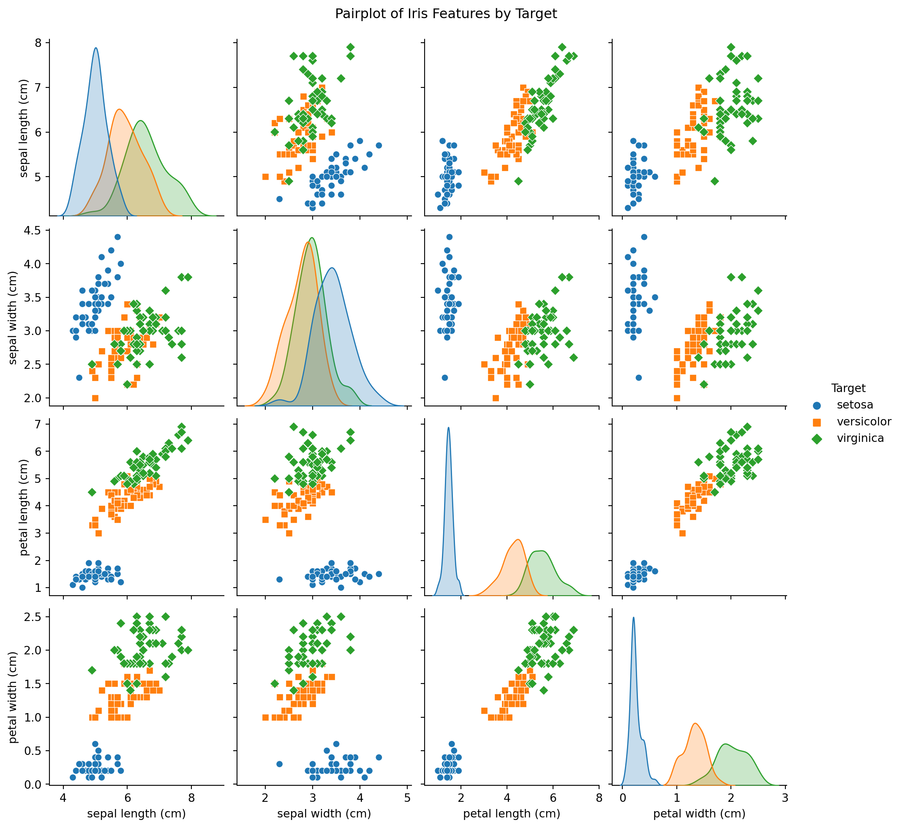
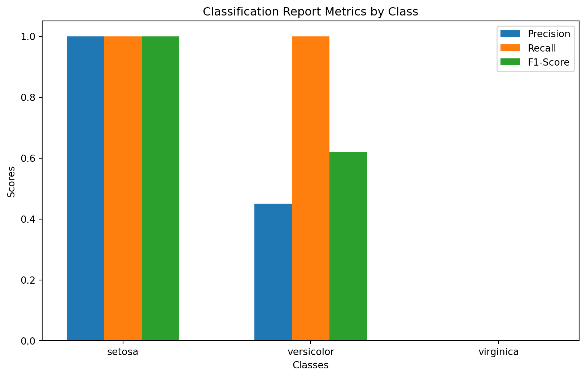
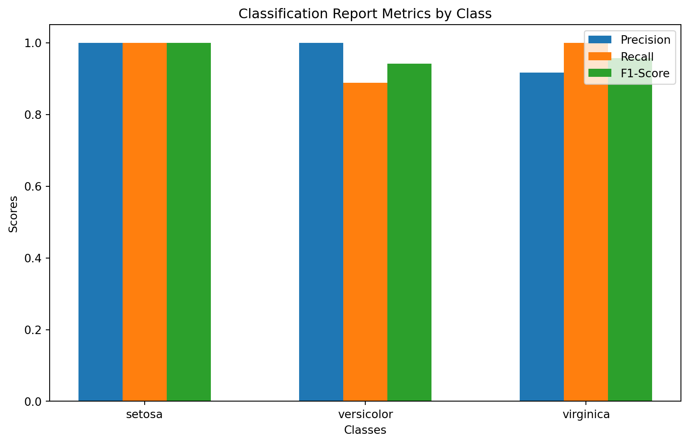
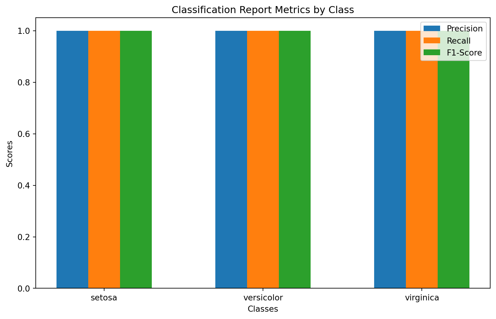

In Classification we have Multi class Data and we want to classify the Data points class.
Code
from sklearn.datasets import load_irisfrom sklearn import treeimport seaborn as snsimport pandas as pdimport matplotlib.pyplot as pltimport numpy as npimport matplotlib.pyplot as pltfrom sklearn.datasets import load_irisfrom sklearn.model_selection import train_test_splitfrom sklearn.ensemble import RandomForestClassifierfrom sklearn.tree import DecisionTreeClassifierfrom sklearn.metrics import classification_report, accuracy_scoreimport warningsfrom sklearn.exceptions import UndefinedMetricWarning
Define Dataset
Code
iris = load_iris()X, y = iris.data, iris.target
Code
data = iris.datatarget = iris.targetfeature_names = iris.feature_namestarget_names = iris.target_namesiris_df = pd.DataFrame(data, columns=feature_names)iris_df['Target'] = target_names[target]plt.figure()# Plot each feature against the target variablesns.pairplot(iris_df, hue='Target', markers=["o", "s", "D"])plt.suptitle("Pairplot of Iris Features by Target", y=1.02)plt.show()
<Figure size 672x480 with 0 Axes>

Loading the Iris dataset here and split the data into training and testing sets
Code
# Load the Iris datasetiris = load_iris()X, y = iris.data, iris.target# Split the data into training and testing setsX_train, X_test, y_train, y_test = train_test_split(X, y, test_size=0.2, random_state=42)
Code
def DrawPricisionRecallF1Scor(y_test, y_pred,target_names): warnings.filterwarnings("ignore", category=UndefinedMetricWarning, module='sklearn.metrics')# Calculate the classification report report = classification_report(y_test, y_pred, target_names=target_names, output_dict=True)# Extract relevant metrics for each class classes =list(iris.target_names) precision = [report[c]['precision'] for c in classes] recall = [report[c]['recall'] for c in classes] f1_score = [report[c]['f1-score'] for c in classes]# Plotting the metrics on a histogram fig, ax = plt.subplots(figsize=(10, 6)) bar_width =0.2 index = np.arange(len(classes)) bar1 = ax.bar(index, precision, bar_width, label='Precision') bar2 = ax.bar(index + bar_width, recall, bar_width, label='Recall') bar3 = ax.bar(index +2* bar_width, f1_score, bar_width, label='F1-Score') ax.set_xlabel('Classes') ax.set_ylabel('Scores') ax.set_title('Classification Report Metrics by Class') ax.set_xticks(index + bar_width) ax.set_xticklabels(classes) ax.legend() plt.show()
Train and Plot the Precision Recall,F1 Score for the maxdepth 1
Code
# Train a classifier (Random Forest in this example)clf = DecisionTreeClassifier(max_depth=1)#clf = RandomForestClassifier(random_state=42)clf.fit(X_train, y_train)# Make predictions on the test setprint(f"Accuracy is {clf.score(X_test,y_test):.2}%")y_pred = clf.predict(X_test)DrawPricisionRecallF1Scor(y_test, y_pred,iris.target_names)
Accuracy is 0.63%

Train and Plot the Precision Recall,F1 Score for the maxdepth 2
Code
# Train a classifier (Random Forest in this example)clf = DecisionTreeClassifier(max_depth=2)#clf = RandomForestClassifier(random_state=42)clf.fit(X_train, y_train)# Make predictions on the test setprint(f"Accuracy is {clf.score(X_test,y_test):.2}%")y_pred = clf.predict(X_test)DrawPricisionRecallF1Scor(y_test, y_pred,iris.target_names)
Accuracy is 0.97%

Train and Plot the Precision Recall, F1 Score for the maxdepth 3
Code
# Train a classifier (Random Forest in this example)clf = DecisionTreeClassifier(max_depth=3)#clf = RandomForestClassifier(random_state=42)clf.fit(X_train, y_train)# Make predictions on the test setprint(f"Accuracy is {clf.score(X_test,y_test):.2}%")y_pred = clf.predict(X_test)DrawPricisionRecallF1Scor(y_test, y_pred,iris.target_names)
Accuracy is 1.0%

In this article we have train the decision tree classifier on iris Dataset with different depth levels. and as per results it show